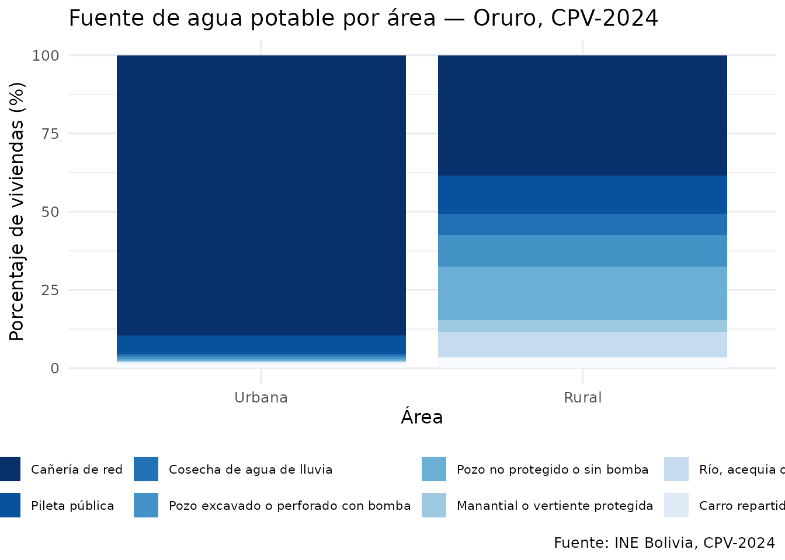
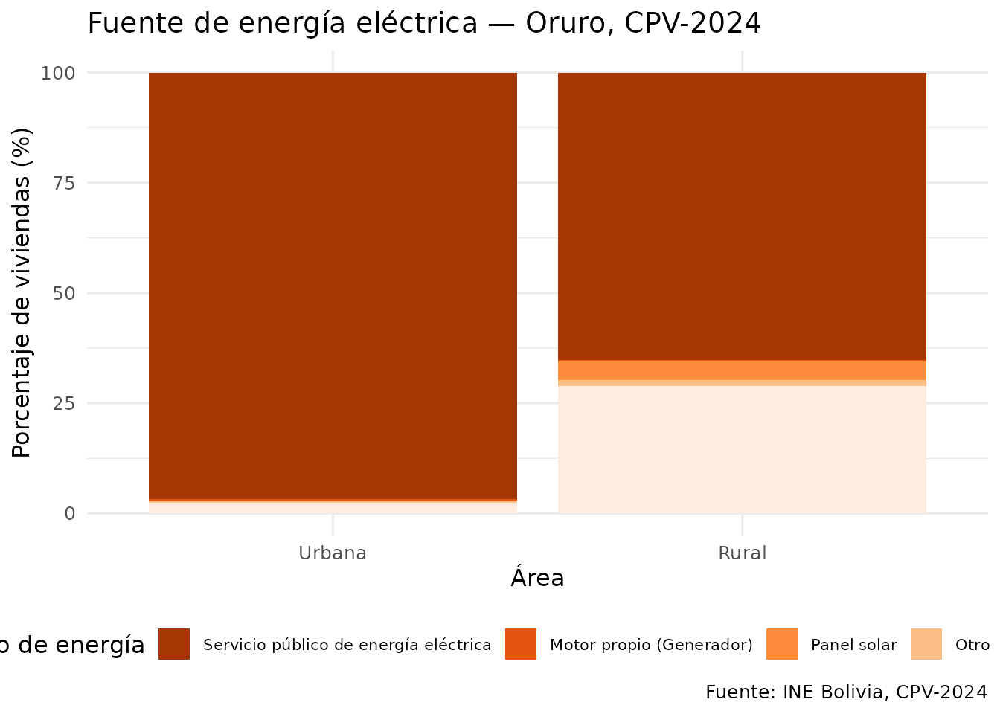
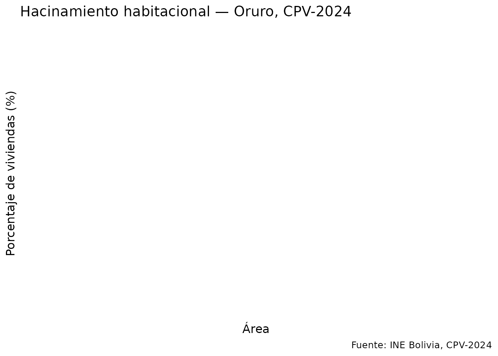
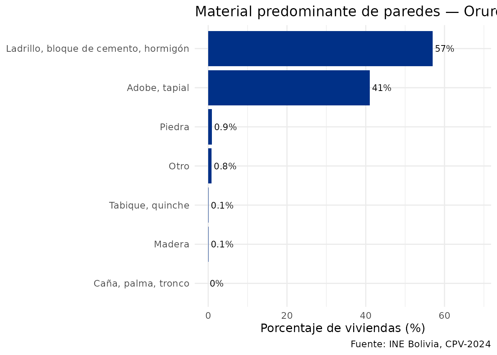

Análisis de condiciones de vivienda
Source:vignettes/articles/analisis-vivienda.Rmd
analisis-vivienda.RmdIntroducción
Esta vignette analiza las condiciones habitacionales usando los datos de viviendas del CPV-2024. La tabla de viviendas se descarga como un único archivo (~55 MB) que incluye todos los departamentos.
Qué cuenta como vivienda
La entidad vivienda de REDATAM tiene 4.490.488
registros, pero 10.287 de ellos no son viviendas: son
personas censadas fuera de una vivienda, en la calle o en tránsito. El
INE no las cuenta como viviendas en ningún tabulado, y descontarlas da
exactamente su total oficial de 4.480.201
viviendas.
Por eso get_viviendas_2024() devuelve por defecto el
universo oficial. El argumento universo da acceso a los
demás:
tipos_vivienda(2024)
#> codigo etiqueta grupo
#> 1 1 Casa particular
#> 2 2 Choza, pahuichi particular
#> 3 3 Departamento particular
#> 4 4 Cuarto(s) o habitación(es) suelta(s) particular
#> 5 5 Vivienda improvisada o vivienda móvil particular
#> 6 6 Establecimiento no destinado para vivienda particular
#> 7 7 Hotel, hostal, residencial o alojamiento colectiva
#> 8 8 Hospital o clínica con internación colectiva
#> 9 9 Cuartel o establecimiento militar o policial colectiva
#> 10 10 Residencia u otro de adultos mayores colectiva
#> 11 11 Albergue de niñas(os) y adolescentes colectiva
#> 12 12 Recinto penitenciario o de reintegración colectiva
#> 13 13 Campamento de trabajo colectiva
#> 14 14 Otra (Instituto de rehabilitación, convento) colectiva
#> 15 15 Persona que vive en la calle no_vivienda
#> 16 16 En tránsito: terminal, aeropuerto, puerto u otro no_vivienda
#> en_universo_viviendas
#> 1 TRUE
#> 2 TRUE
#> 3 TRUE
#> 4 TRUE
#> 5 TRUE
#> 6 TRUE
#> 7 TRUE
#> 8 TRUE
#> 9 TRUE
#> 10 TRUE
#> 11 TRUE
#> 12 TRUE
#> 13 TRUE
#> 14 TRUE
#> 15 FALSE
#> 16 FALSEuniverso |
Registros | Qué es |
|---|---|---|
"viviendas" |
4.480.201 | El universo oficial del INE (defecto) |
"particulares" |
4.463.773 | Casas, departamentos, chozas, cuartos sueltos… |
"colectivas" |
16.428 | Hoteles, hospitales, cuarteles, recintos penitenciarios… |
"todos" |
4.490.488 | La entidad cruda, con calle y tránsito |
# El total oficial
nrow(get_viviendas_2024())
# La entidad completa, como la devuelve REDATAM
nrow(get_viviendas_2024(universo = "todos"))
# Solo viviendas colectivas
get_viviendas_2024(universo = "colectivas", variables = "v01_tipoviv") |>
collect() |>
count(v01_tipoviv) |>
etiquetar_valores()Este es también el motivo de una diferencia que aparecía al comparar
con el geoportal (get_unidades_2024()): agregando por
municipio, sus viviendas cuadran con el universo oficial en los 343
municipios, no con la entidad cruda.
# Descargar viviendas con variables de habitabilidad
# (se filtra por Oruro después de descargar el archivo completo)
viviendas <- get_viviendas_2024(
departamento = "Oruro",
variables = c("urbrur", "v03_pared", "v05_techo", "v06_piso",
"v07_aguapro", "v09_energia", "v11_basura",
"v14_dormit", "tot_pers")
) |>
collect() |>
etiquetar_valores(columnas = c("urbrur", "v03_pared", "v05_techo", "v06_piso",
"v07_aguapro", "v09_energia", "v11_basura"))
#> ✔ Usando caché: vivienda.parquet
#> ℹ Universo "viviendas": se excluyen los registros de personas en la calle o en
#> tránsito, que el INE no cuenta como viviendas.
#> ℹ Con `universo = "todos"` obtienes la entidad completa de REDATAM.
nrow(viviendas)
#> [1] 270705Fuente de agua potable
agua <- viviendas |>
filter(!is.na(v07_aguapro), !is.na(urbrur)) |>
count(urbrur, v07_aguapro) |>
group_by(urbrur) |>
mutate(pct = n / sum(n) * 100)
ggplot(agua, aes(x = urbrur, y = pct, fill = v07_aguapro)) +
geom_col() +
scale_fill_brewer(palette = "Blues", direction = -1) +
labs(
title = "Fuente de agua potable por área — Oruro, CPV-2024",
x = "Área",
y = "Porcentaje de viviendas (%)",
fill = "Fuente de agua",
caption = "Fuente: INE Bolivia, CPV-2024"
) +
theme_minimal(base_size = 12) +
theme(legend.position = "bottom",
legend.text = element_text(size = 8))
Energía eléctrica
energia <- viviendas |>
filter(!is.na(v09_energia), !is.na(urbrur)) |>
count(urbrur, v09_energia) |>
group_by(urbrur) |>
mutate(pct = n / sum(n) * 100)
ggplot(energia, aes(x = urbrur, y = pct, fill = v09_energia)) +
geom_col() +
scale_fill_brewer(palette = "Oranges", direction = -1) +
labs(
title = "Fuente de energía eléctrica — Oruro, CPV-2024",
x = "Área",
y = "Porcentaje de viviendas (%)",
fill = "Tipo de energía",
caption = "Fuente: INE Bolivia, CPV-2024"
) +
theme_minimal(base_size = 12) +
theme(legend.position = "bottom",
legend.text = element_text(size = 8))
Índice de hacinamiento
hacinamiento <- viviendas |>
filter(!is.na(tot_pers), !is.na(v14_dormit), v14_dormit > 0, tot_pers > 0,
!is.na(urbrur)) |>
mutate(
ppp = tot_pers / v14_dormit,
nivel = case_when(
ppp <= 2 ~ "Sin hacinamiento (≤2 p/dormitorio)",
ppp <= 3 ~ "Hacinamiento medio (2–3)",
TRUE ~ "Hacinamiento severo (>3)"
)
) |>
count(urbrur, nivel) |>
group_by(urbrur) |>
mutate(pct = n / sum(n) * 100)
ggplot(hacinamiento, aes(x = urbrur, y = pct, fill = nivel)) +
geom_col() +
scale_fill_manual(values = c(
"Sin hacinamiento (≤2 p/dormitorio)" = "#003087",
"Hacinamiento medio (2–3)" = "#F4C430",
"Hacinamiento severo (>3)" = "#d7191c"
)) +
labs(
title = "Hacinamiento habitacional — Oruro, CPV-2024",
x = "Área",
y = "Porcentaje de viviendas (%)",
fill = NULL,
caption = "Fuente: INE Bolivia, CPV-2024"
) +
theme_minimal(base_size = 12) +
theme(legend.position = "bottom")
Material de paredes
paredes <- viviendas |>
filter(!is.na(v03_pared)) |>
count(v03_pared, sort = TRUE) |>
mutate(pct = n / sum(n) * 100)
ggplot(paredes, aes(x = reorder(v03_pared, pct), y = pct)) +
geom_col(fill = "#003087") +
geom_text(aes(label = paste0(round(pct, 1), "%")), hjust = -0.1, size = 3.2) +
coord_flip() +
ylim(0, max(paredes$pct) * 1.2) +
labs(
title = "Material predominante de paredes — Oruro, CPV-2024",
x = NULL,
y = "Porcentaje de viviendas (%)",
caption = "Fuente: INE Bolivia, CPV-2024"
) +
theme_minimal(base_size = 12)
Join personas–viviendas con DuckDB
library(DBI)
con <- DBI::dbConnect(duckdb::duckdb(), dbdir = ":memory:")
#> duckdb keeps downloaded extensions and secrets in a temporary directory:
#> ℹ /tmp/RtmpzyN5xc/duckdb
#> This is removed when the R session ends.
#> • Extensions are re-downloaded each session.
#> • Secrets are lost.
#> ℹ Run duckdb(shared_home = TRUE) (or create ~/.duckdb) to keep them (suitable for most users).
#> ℹ Run duckdb(shared_home = FALSE) to accept the temporary directory (and silence this message).
#> ℹ See ?duckdb_storage for details and alternatives.
duckdb::duckdb_register_arrow(
con, "personas",
get_personas_2024(departamento = "Oruro",
variables = c("idep","iprov","imun","i00","p25_sexo","p26_edad","nivel_edu"))
)
#> ℹ Descargando persona_dep04.parquet (~14 MB)...
#> ✔ Descargado persona_dep04.parquet [296ms]
#>
#> ℹ No toda la población respondió esta variable:
#> nivel_edu: personas de 19 años o más
#> ℹ Un porcentaje sobre el total de filas usaría un denominador mayor que ese
#> universo; filtra por el universo antes de calcularlo.
#> ℹ El universo de cada variable está en `codebook(variable)$universo`.
duckdb::duckdb_register_arrow(
con, "viviendas",
get_viviendas_2024(departamento = "Oruro",
variables = c("idep","iprov","imun","i00","v07_aguapro","urbrur","tot_pers"))
)
#> ✔ Usando caché: vivienda.parquet
# Personas en viviendas sin acceso a red pública de agua, por área
resultado <- DBI::dbGetQuery(con, "
SELECT
v.urbrur,
COUNT(*) AS personas,
ROUND(AVG(p.p26_edad), 1) AS edad_promedio
FROM personas p
JOIN viviendas v
ON p.idep = v.idep AND p.iprov = v.iprov
AND p.imun = v.imun AND p.i00 = v.i00
WHERE v.v07_aguapro != 1
GROUP BY v.urbrur
ORDER BY personas DESC
")
DBI::dbDisconnect(con, shutdown = TRUE)
resultado |> etiquetar_valores()
#> urbrur personas edad_promedio
#> 1 Rural 129099 33.6
#> 2 Urbana 30466 26.8